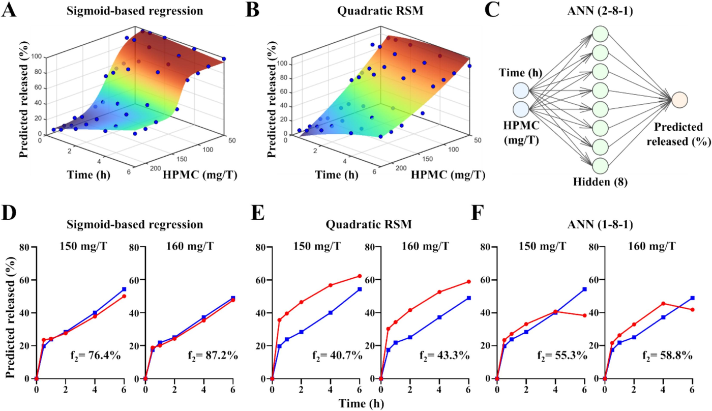
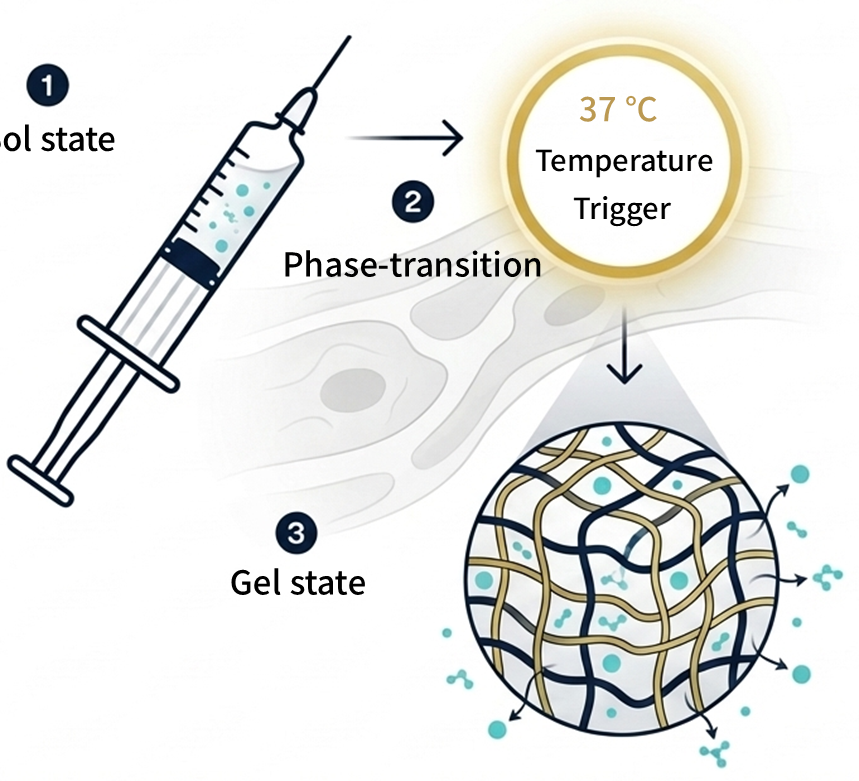
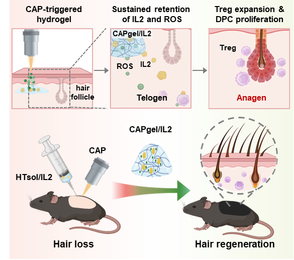
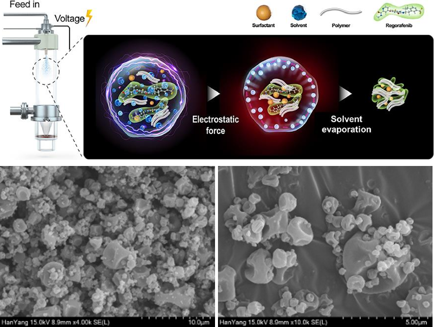

연구Research
제형 설계부터 표적 전달, 산업화까지From formulation design to targeted delivery and industrial translation
PHILOSOPHY
연구 철학Research Philosophy
우리 연구실은 새로운 약물을 합성하기보다, 이미 있는 약물이 제 효능을 온전히 내도록 전달 방식을 설계합니다. 아무리 좋은 약물도 필요한 곳에, 필요한 때에, 필요한 만큼 도달하지 못하면 기대한 효과를 내기 어렵습니다. 그래서 우리는 약물 자체를 바꾸는 대신 제형과 전달체를 바꾸어 더 나은 약효와 더 적은 부작용을 얻는 실용적인 길을 택합니다. 검증된 약물에서 출발하므로 환자에게 닿기까지의 거리도 짧아집니다. 동시에 연구가 실험실 안에서 끝나지 않도록, 설계 단계부터 수율과 재현성, scale-up 가능성을 함께 따집니다. 소량에서만 작동하는 제형은 의약품이 될 수 없기 때문입니다. 실험대에서 얻은 결과가 생산 현장을 거쳐 실제 의약품으로 이어지는 것이 우리 연구의 목표입니다.
Our lab does not synthesize new drugs. We design how existing drugs are delivered so that they can show their full efficacy. Even an excellent drug falls short when it does not reach the right place, at the right time, in the right amount. We therefore take a pragmatic route: we change the formulation and the carrier, leaving the drug itself as it is, to gain better efficacy with fewer side effects. Starting from proven drugs shortens the distance to patients. We consider yield, reproducibility and scalability from the design stage, so that our research does not end in the laboratory. A formulation that works only at small scale cannot become a medicine. Our goal is to carry results from the bench through manufacturing to real medicines.
- 01기존 약물Existing drugs검증된 약물에서 출발Start from proven drugs
- 02전달 설계Delivery design제형과 전달체로 장소·시간·양 조절Control site, timing and dose
- 03공정과 scale-upProcess & scale-up수율과 재현성 확보Secure yield and reproducibility
- 04의약품Medicines실험대에서 생산 현장으로From the bench to manufacturing
AI/ML을 이용한 데이터 기반의 제형 최적화Data-Driven Formulation Optimization Using AI/ML
Data-Driven Formulation Optimization Using AI/MLAI/ML을 이용한 데이터 기반의 제형 최적화
인공지능·기계학습 모델로 제형 조성과 공정 변수를 데이터에 기반해 최적화합니다. 회귀 모델과 인공신경망으로 조성에 따른 약물 방출을 예측하고 실험으로 검증해, 시행착오를 줄이면서 목표 품질에 맞는 제형을 찾습니다.We use AI/ML models to optimize formulation composition and process variables based on data. Regression models and artificial neural networks predict drug release from composition, and experiments verify the predictions, so we reach the target quality with fewer trial-and-error runs.

자극감응형 약물전달Stimuli-Responsive Drug Delivery
Stimuli-Responsive Drug Delivery자극감응형 약물전달
온도나 저온 대기압 플라즈마 같은 체내외 자극에 반응해 필요한 위치와 시점에 약물을 방출하는 하이드로겔 및 나노 플랫폼을 개발합니다. 투여할 때는 액상이고 체내에서 겔로 바뀌는 제형으로 약물을 국소에 오래 머물게 합니다.We develop hydrogel and nano platforms that release drugs at the right place and time in response to internal or external stimuli such as temperature and cold atmospheric plasma. Formulations that are liquid at administration and turn into a gel in the body keep drugs at the local site for longer.

표적 세포 및 질환에 바이오의약품 전달Biotherapeutic Delivery to Target Cells and Diseases
Biotherapeutic Delivery to Target Cells and Diseases표적 세포 및 질환에 바이오의약품 전달
펩타이드, 단백질 및 유전자를 포함한 바이오의약품을 특정 세포와 질환 부위로 표적 전달하는 전달체를 설계합니다. 전달체가 약물을 분해로부터 보호하고 표적에 선택적으로 도달하게 해, 약효를 높이고 다른 조직에 미치는 영향을 줄입니다.We design carriers that deliver biotherapeutics, including peptides, proteins and genes, to specific cells and disease sites. The carrier protects its cargo from degradation and reaches the target selectively, which raises efficacy and reduces effects on other tissues.

생체이용률 개선 나노치료제 개발Development of Nanotherapeutics for Improved Bioavailability
Development of Nanotherapeutics for Improved Bioavailability생체이용률 개선 나노치료제 개발
나노제형 기술로 약물의 체내외 안정성 및 생체이용률을 개선합니다. 정전분무 등으로 입자 크기와 결정성을 조절해 난용성 약물의 용해도와 용출을 높이고, 고체분산체와 자가유화 제형으로 경구 흡수를 끌어올립니다.We improve the in vitro and in vivo stability and bioavailability of drugs with nanoformulation technologies. Techniques such as electrostatic spraying control particle size and crystallinity to raise the solubility and dissolution of poorly water-soluble drugs, and solid dispersions and self-emulsifying formulations increase oral absorption.
